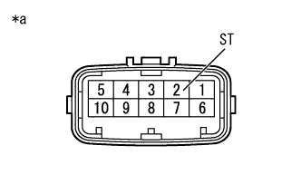
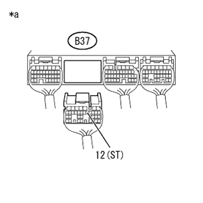
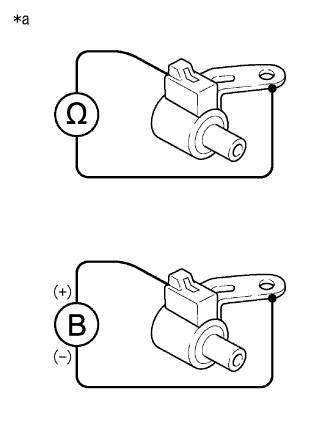

DTC P0787/65 ST Solenoid system (LOW) |
DTC P0788/65 ST Solenoid system (High) |
| DTC No. SAE/TCCS | DTC detection conditions
| Inspection site |
|---|---|---|
| P0787/65 |
|
|
| P0788/65 |
|
| Step 1 | Trans mission wire single check (transmission solenoid No.3 (ST)) |
Cut the transmission wire connector B10.
|  |
Use SST (Toyota Electrical Tester) to measure resistance between terminals.
| Inspection terminal | Inspection condition | Reference value |
|---|---|---|
| 2 (ST) --Body Earth | 20 ° C | 11 to 15Ω |
| *a | Connector non -connection status (Transmission wire) |
|
| ||||
| OK | |
| Step 2 | Wire harness and connector inspection (transmission wire -engine control computer) |
reference.Cut the connector B37 of the engine control computer.
|  |
Use SST (Toyota Electrical Tester) to measure resistance between terminals.
| Inspection terminal | Inspection condition | Reference value |
|---|---|---|
| B37-12 (ST) --Body Earth | 20 ° C | 11 to 15Ω |
| *a | Vehicle wire harness connector rear side (Engine control computer connection connector) |
|
| ||||
| OK | ||
| ||
| Step 3 | Transmission Solenoid No.3 (ST) Single inspection |
|  |
Remove the transmission solenoid No.3 (ST).
Use SST (Toyota Electrical Tester) to measure resistance between terminals.
| Inspection terminal | Inspection condition | Reference value |
|---|---|---|
| Transmission Solenoid No.3 (ST) Connector -Body | 20 ° C | 11 to 15Ω |
| *a | Connector non -connection status (Transmission Solenoid No.3 (ST)) |
Connect the battery plus to the connector of the transmission Solenoid No.3 (ST), and when the battery minus is connected to the solenoid body, check that the valve in the solenoid operates.
|
| ||||
| OK | ||
| ||